v3.1.0 screenshot audit
Actual frontend, fictional intercepted services. Local workflow checks; no production certification.
Full release audit · axe results · Lighthouse report
1. Worker Home
Pass in local fixture. Worker can start a visit without an assignment. Supplied site photo and current work remain available.
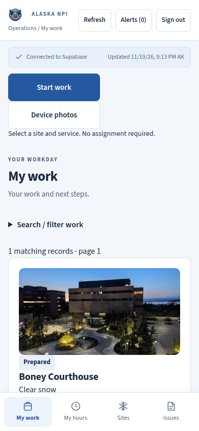
Automated axe violations: 0. Manual checks remain; screenshots do not establish cloud security or physical accuracy.
2. Site Service
Pass in local fixture. Site and service selection, optional crew disclosure and nearest-site suggestion.
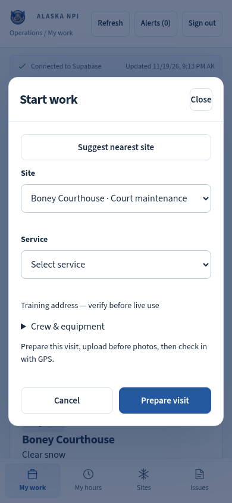
Automated axe violations: 0. Manual checks remain; screenshots do not establish cloud security or physical accuracy.
3. Prepared Visit
Pass in local fixture. Short service cards and before-photo/start actions.
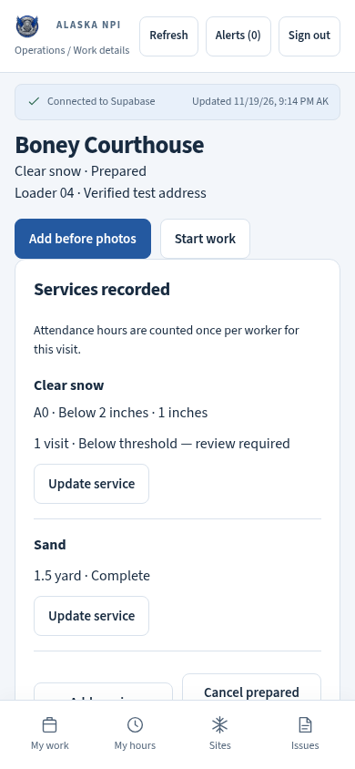
Automated axe violations: 0. Manual checks remain; screenshots do not establish cloud security or physical accuracy.
4. Direct Camera
Pass in local fixture. Direct camera capture with keep and retake; synthetic camera feed.
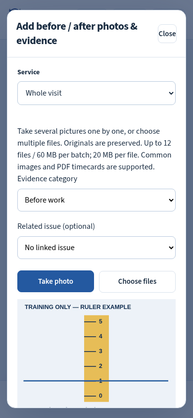
Automated axe violations: 0. Manual checks remain; screenshots do not establish cloud security or physical accuracy.
5. Snow Measurement
Pass in local fixture. Ruler photo, manual inches and explicit confirmation. Automatic reading is optional.
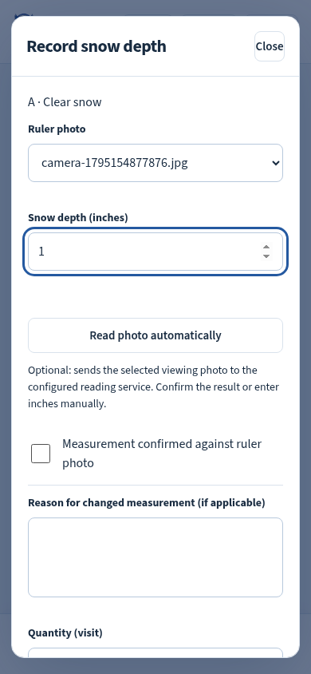
Automated axe violations: 0. Manual checks remain; screenshots do not establish cloud security or physical accuracy.
6. Reading Fallback
Pass in local fixture. Unavailable automatic reader leaves manual input usable and does not confirm a reading.
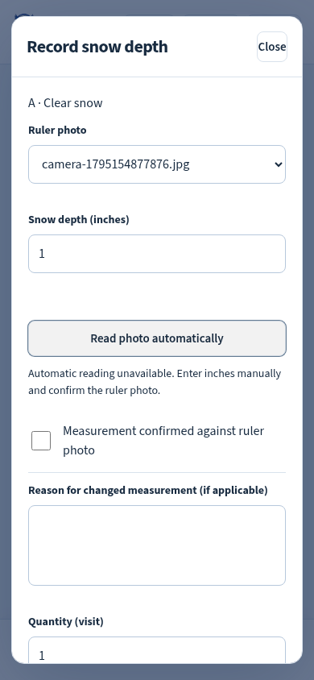
Automated axe violations: 0. Manual checks remain; screenshots do not establish cloud security or physical accuracy.
7. Issue Report
Pass in local fixture. Category, urgency and description use the established issue form.
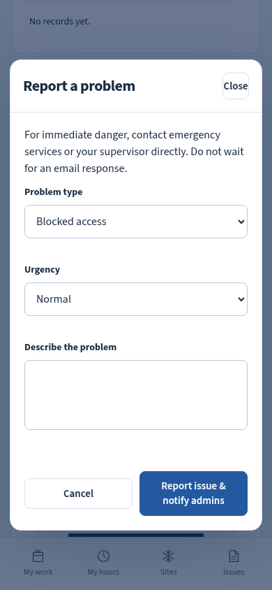
Automated axe violations: 0. Manual checks remain; screenshots do not establish cloud security or physical accuracy.
8. Company Review
Pass in local fixture. Company reviews line/sub-line quantities and original versus claimed hours.
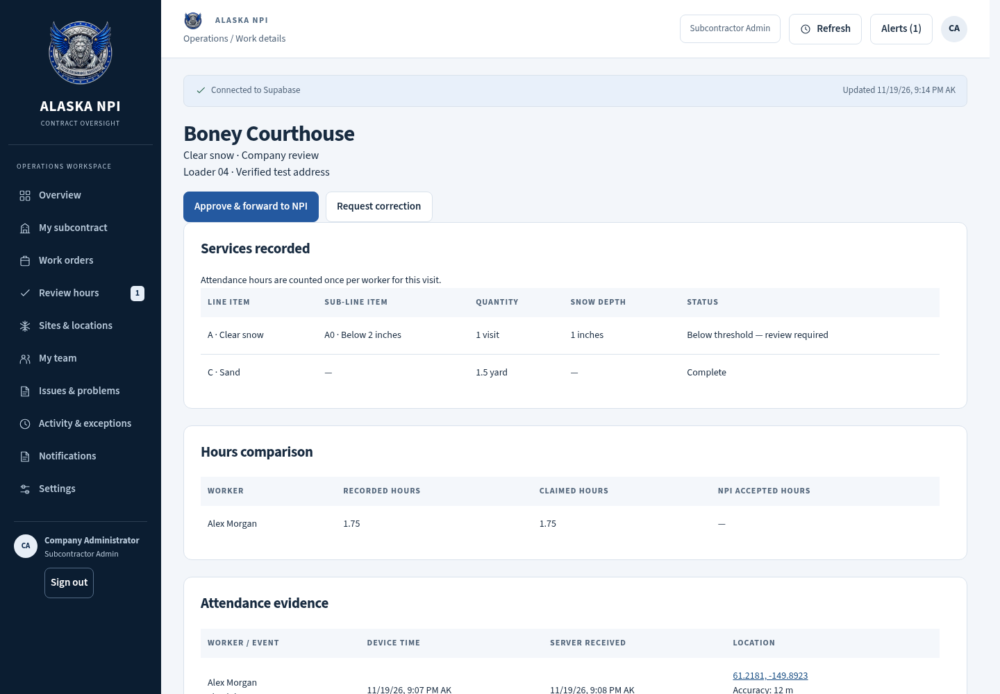
Automated axe violations: 0. Manual checks remain; screenshots do not establish cloud security or physical accuracy.
9. Private Photo
Pass in local fixture. Same private viewing file available to the company; original retained separately.
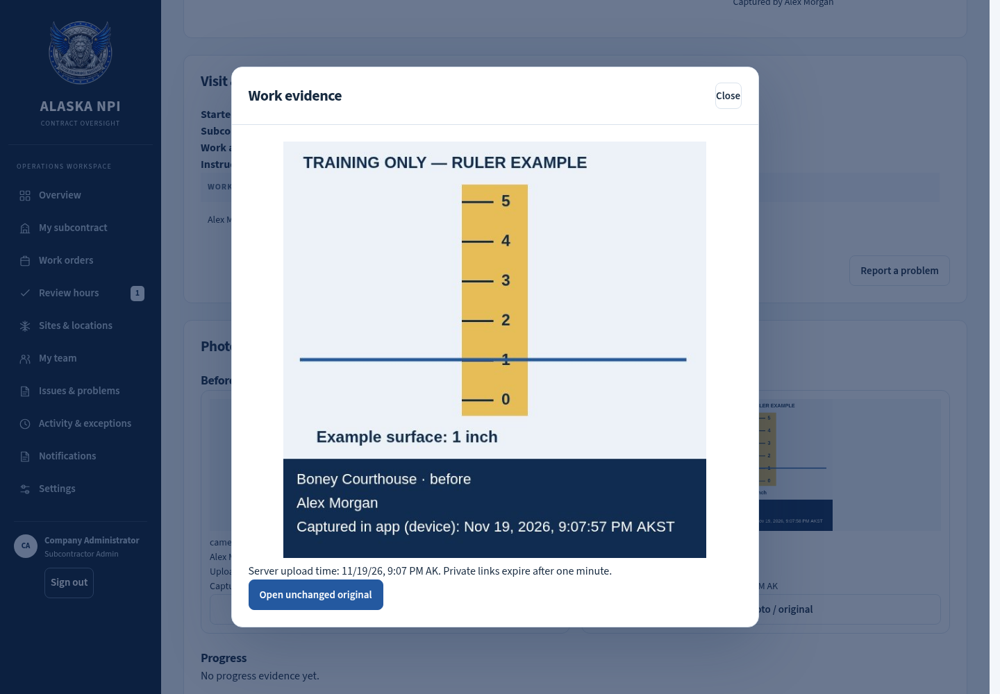
Automated axe violations: 0. Manual checks remain; screenshots do not establish cloud security or physical accuracy.
10. Npi Catalogue
Pass in local fixture. Contract line and sub-line configuration remains in NPI administration.
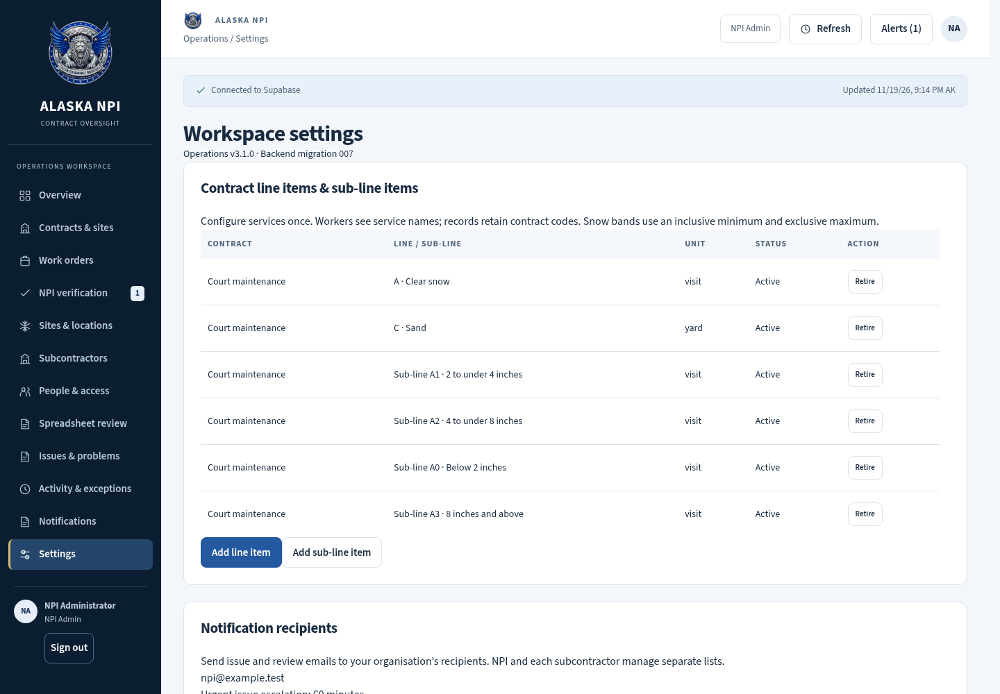
Automated axe violations: 0. Manual checks remain; screenshots do not establish cloud security or physical accuracy.
11. Sub Line Configuration
Pass in local fixture. Parent line sets contract, service category and unit. Snow minimum/maximum bounds are explicit.
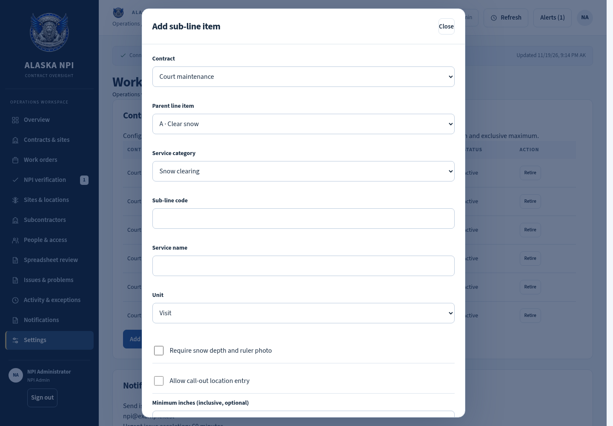
Automated axe violations: 0. Manual checks remain; screenshots do not establish cloud security or physical accuracy.
12. Notification Settings
Pass in local fixture. Separate recipient list, escalation and daily-summary control.
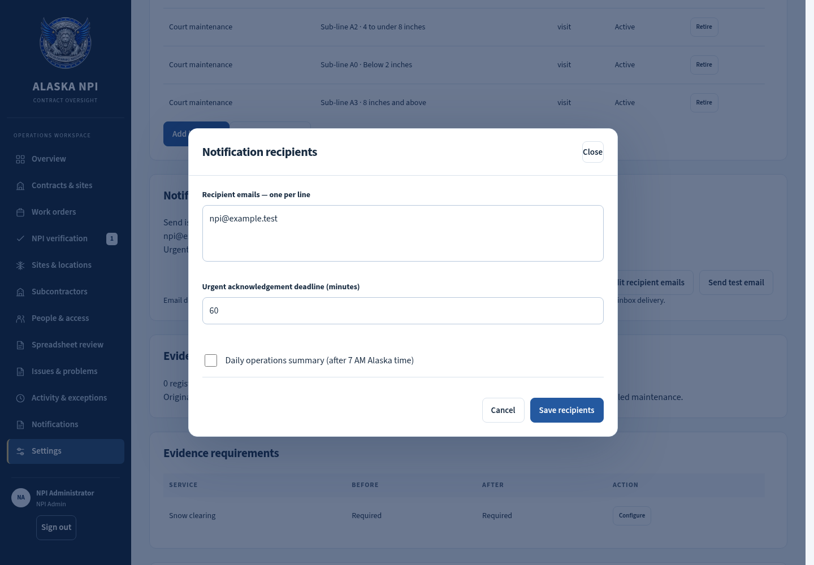
Automated axe violations: 0. Manual checks remain; screenshots do not establish cloud security or physical accuracy.
13. Npi Verification
Pass in local fixture. Exact claimed hours or reasoned correction; approval still follows company review.
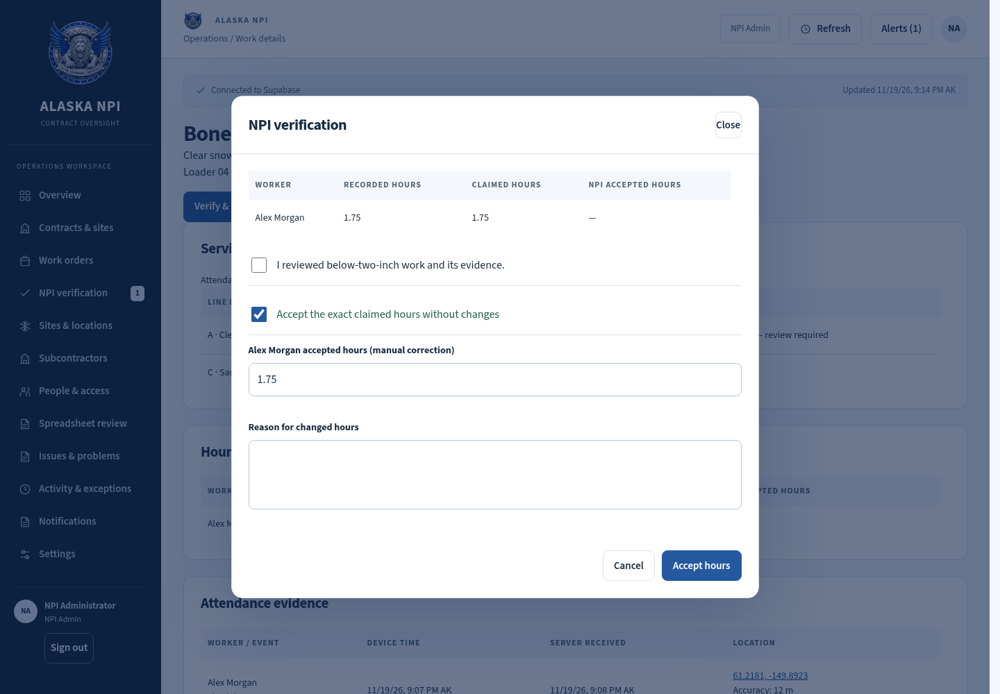
Automated axe violations: 0. Manual checks remain; screenshots do not establish cloud security or physical accuracy.